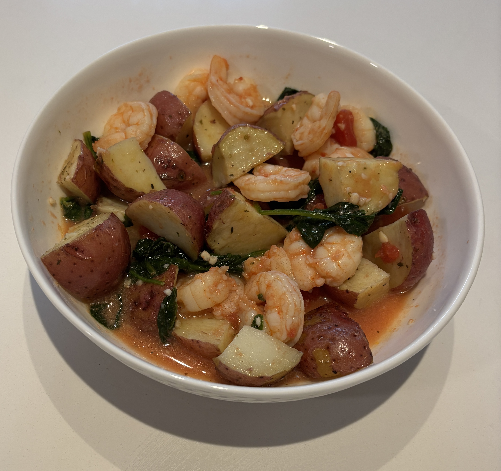

Home
Shrimp Saute with Red Potatoes

Ingredients
- 16oz Red potatoes
- 1 tbsp Olive oil
- 1/2 tsp Italian seasoning
- Salt and pepper
- 1 pint Grape tomatoes halved
- 2 cloves garlic minced
- 1 1/2 lbs large shrimp peeled and deveined
- 1/4 tsp crushed red pepper flakes
- 5 oz baby spinach
- 1 1/2 oz finely grated parmesan cheese
- 1/2 cup fresh basil leaves
Steps
- Preheat the oven to 425 degrees. Quarter the potatoes and toss them with 2 tsp olive oil, italian seasoning, salt, and pepper on a baking sheet
- Roast in the oven for 25-30 min flipping halfway through until golden and tender
- Heat a skillet over medium heat. Add the remaining olive oil and tomatoes to the skillet. Cook, stirring occasionally, for 3-4 min, or until the tomatoes soften and release some of their juices
- Add the garlic, shrimp, and crushed red pepper to the skillet. Sauté the shrimp for 1-2 minutes per side, or until opaque and cooked through.
- Add the spinach to the skillet in handfuls, stirring after each addition to allow it to wilt.
- Reduce the heat to low and sprinkle half the grated Parmesan cheese over the skillet contents. Stir to combine, allowing the cheese to melt slightly.
- Divide the shrimp, sautéed veggies, and spinach between plates. Garnish with the reserved Parmesan cheese and basil ribbons. Serve alongside the roasted red potatoes.